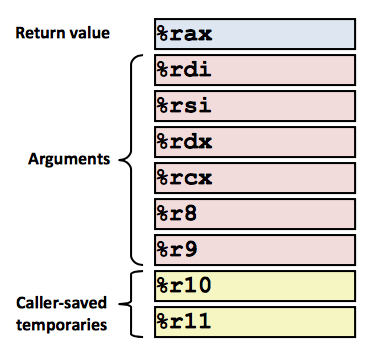

Machine-Level Representation of Programs
Level 4
Level 4 covers the machine-level representation of procedure calls--when one function passes control to another function. This involves the actual passing of control, the passing of data, memory management, then memory deallocation, storing return values and passing control back to the calling function. This also introduces discussion of the representation of the stack in assembly
The Stack
Region of memory managed with stack discipline. The stack grows toward lower addresses. Register %rsp contains lowest stack address, or the address of the top element. The instruction push src fetches the source operand, decrements %rsp by 8, and writes the operand at the address given by %rsp. Similarly, pop dest reads the value at %rsp, increments %rsp by 8, and stores that value at the destination, which must be a register
Function Calls: When P calls Q
We use the stack to support procedure call and return: P is suspended and control moves to Q. A stack frame is setup on top of the stack for Q. That stack frame contains saved registers, local variables and arguments if Q is calling another function. Local storage is needed when there are not enough registers available, when a variable in HLL is referred to by its address, and for arrays, structures, etc.
Registers Usage Convention
P was our caller and Q the callee. When callee uses a register for temporary storage, the contents could be overwritten by Q. Instead we use the conventions of “Caller Saved” whereby the Caller saves temporary values in its frame before the call, and “Callee Saved” which saves temporary values in its frame before using, then restores them before returning to caller. As seen in the image, %rax is our return value that is caller-saved and can be modified by procedure. %rdi through %r9 are our arguments that are also caller-saved and can be modified. %r10 and %rll are temporary caller-saved values that can be modified.
Further, our callee-saved temporary registers are %rbx and %r12-14, which the callee must save and restore at end. %rbp is our base pointer that points to frame and can be mixed and matched, and %rsp, as we know is the stack pointer, which is a special form of callee-saved that is restored to original value upon exit from function.
Recursion Observations
Recursion uses normal calling conventions and is handled without special consideration – Stack frames mean that each function call has private storage (Saved registers & local variables and saved return pointer). Register saving conventions prevent one function call from corrupting another’s data. Stack discipline follows call / return pattern: If P calls Q, then Q returns before P (LIFO). Also works for mutual recursion – P calls Q; Q calls P.